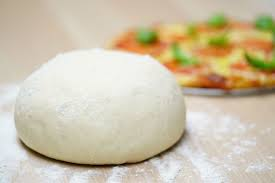

Home
Pizza Dough Recipe

NY Style Pizza at Home
A wonderful recipe for NY Style Pizza Dough
Ingredients
The Poolish Day 1
- 50g Warm water
- 1g Active dry yeast
- 50g Bread or AP flour
- A pinch of Sugar
Dough Day 2
- 180g Warm water
- 4g Active dry yeast
- A pinch of Sugar
- 10g Sugar
- 315g Bread flour
- 8g Salt
- 10g Olive Oil
Step by Step instructions
The Poolish Day 1
- Mix up into a paste like texture
- Place in Container, Cover it up
- Leave out in Room Temp for 24 hours
Dough Day 2
- Add Warm Water and Active Dry Yeast and a pinch of Sugar to a Container Stir it up, let it sit for about 15 minutes
- After 15 minutes, you should see bubbled in the water
- Add Oil & the Poolish from yesterday, and stir it
- Add the Bread Flour, Salt, Sugar and Olive Oil and mix/stir for 10 to 20 minutes
- Knead it the dough to make it smooth
- Form a big ball
- Cover up the Dough Ball with a Container or Bowl and let it ferment for 45 Minutes
- Divide it up to about 300G each
- Form 2 Dough Balls
- Place it in a sealed container that is oiled, place lid on it, and let it proof in the Fridge for 1 to 5 days
- Take the Pizza dough out, and place a damp towel over it while it is in the bowl or container, and let it sit out for about 1 hour or when it reaches room temperature
- Form your pizza dough and make a pizza pie!